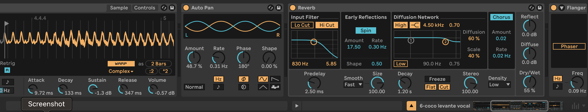
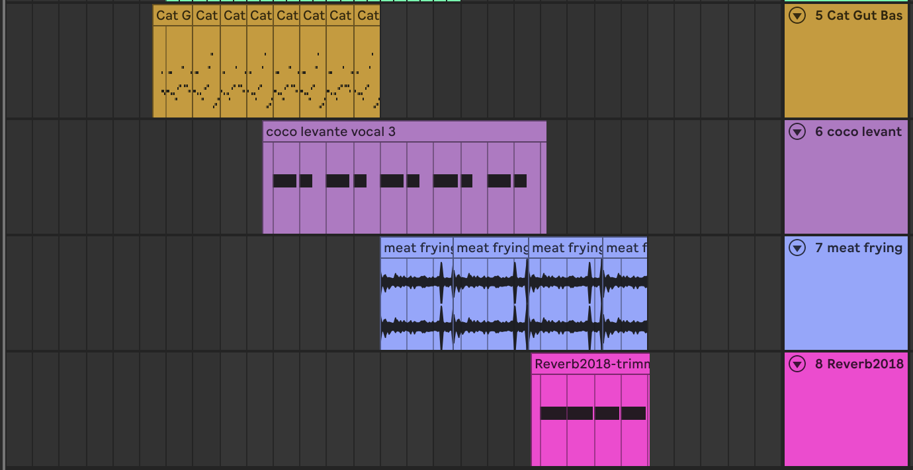
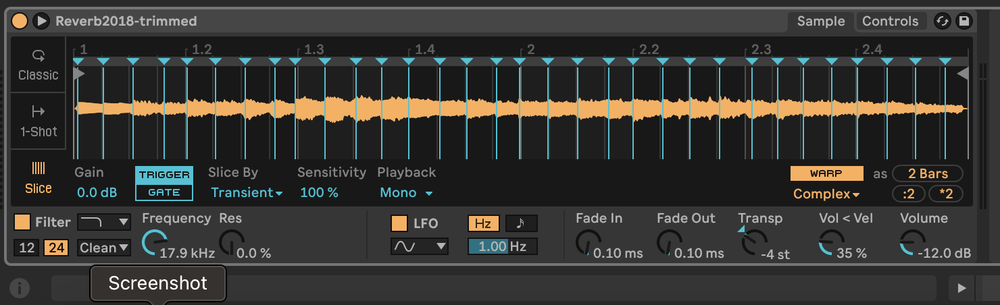

I’ve had this track since 2021 but left it unfinished. There’s still more work to be done, but I wanted to take this opportunity to round the track out a bit. I didn’t even have a name for this track until recently, when I settled on “Coco Levante”. This is because my dog’s name is Coco and I’m lazy with naming songs, and this track specifically feels like it draws a lot of influence from Tame Impala. There’s an obscure Tame Impala interlude from his live album called Sestri Levante and that’s where I got the second halve from. I’m really happy with the name because “Coco Levante” sounds like a made-up perfume brand, and the vibe of song makes me think of perfume commercials for some reason.
Everything is old except for the bassline and the three audio samples heard throughout the track: my humming, the sound of meat being fried, and a pitched-down guitar with delay and reverb. I didn’t consider this at first, but I decided to hum a melody because I’ve been playing guitar all day through my instructor job and I got a bit tired of plugging into stuff. Despite my apparent laziness, I ended pretty happy with the raw recording, but just as I’ve been doing with every original song lately, there’s gotta be flanger thrown somewhere. Not only did I add flanger to my voice for that ‘trippy’ kick, but I also added some reverb to make it feel a bit more distant. The result were some drony “la’s” that felt incomplete without some occasional panning, so I threw in an auto pan effect.
The next sound I worked on was the frying meat sound. My mom just happened to be making dinner while I was working on the track, and I could hear some meat frying in the background. I sampled the sound because I thought it could work well for atmosphere, but since the main chunk of the track felt atmospheric enough, I felt like the sound could complement the vocals once they were isolated. I introduce this sample once the synth, bass, and congas finish to add that extra crispy texture (no pun intended).
The last sample I used was that of a pitched-down guitar with reverb and delay. Now this was a recording of myself playing guitar from 2018, I remember I first recorded that loop into a Ditto X2 looper pedal before recording that loop straight into my computer. This is why it has that warm texture, I’ve sold my Ditto ever since to downsize my pedal board and while do miss it every now and then, its memory lives on in this 7 year-old loop. I pitched it down and was instantly tempted to introduce that throughout the entire track, but I also don’t like adding too much sounds to my tracks because I have this idea or beauty in simplicity. I think it paid of because the main chunk of Coco Levante is still poppy and groovy, but once the synth and congas come back on, the guitar loop helps to imply that vibes will be changing. While I’m not yet sure if I like the direction the track is taking now, I at least have something to build off when I finally finish Coco Levante.